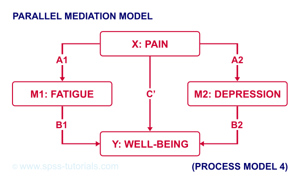

SPSS PROCESS 宏教程
作者：Ruben Geert van den Berg，归类于回归分析
- PROCESS 的下载与安装
- 创建表格输出而非文本输出
- 使用 SPSS 语法运行 PROCESS
- PROCESS 模型编号
- PROCESS 与虚拟编码 (Dummy Coding)
- PROCESS 的优点与缺点
什么是 PROCESS?
PROCESS 是一个可免费下载的 SPSS 工具，用于估计具有中介和/或调节效应的回归模型。一个这样的模型示例如下：
正如SPSS 中介分析教程中所讨论的，即使不使用 PROCESS，也可以相当容易地估计这个模型。但是，与更经典的方法相比，使用 PROCESS 具有一些优点（以及缺点）。那么如何获取 PROCESS，它又是如何工作的呢？
想要跟随本教程的读者可以下载并打开 wellbeing.sav 数据文件，部分数据如下所示。
请注意，本教程的重点是熟练使用 PROCESS。示例分析将在以后的教程中介绍。
下载与安装 PROCESS
可以在这里下载 PROCESS（向下滚动到 “PROCESS macro for SPSS, SAS, and R”）。下载的文件是一个 .zip 文件，你需要先解压缩。解压缩后，在 SPSS 中，导航到 “扩展 (Extensions)”  -> “实用程序 (Utilities)” -> “安装定制对话框(兼容模式) (Install Custom Dialog (Compatibility Mode))”。选择 “process.spd” 并单击 “打开 (Open)”，如下所示。
-> “实用程序 (Utilities)” -> “安装定制对话框(兼容模式) (Install Custom Dialog (Compatibility Mode))”。选择 “process.spd” 并单击 “打开 (Open)”，如下所示。
对于大多数使用最新版本的 SPSS 用户来说，这应该有效。如果无效，请查阅下载中包含的安装说明。
运行 PROCESS
如果成功安装了 PROCESS，你将在回归菜单中找到它，如下所示。
对于一个非常基本的中介分析，我们按照下图所示填写对话框。
 Y 指的是因变量（或“结果”变量）；
Y 指的是因变量（或“结果”变量）；
 X 指的是自变量或回归分析中的“预测变量”；
X 指的是自变量或回归分析中的“预测变量”；
 对于简单的中介作用，选择模型 4。我们稍后会仔细研究模型编号；
对于简单的中介作用，选择模型 4。我们稍后会仔细研究模型编号；
 现在，我们先点击 “确定 (Ok)”。
现在，我们先点击 “确定 (Ok)”。
结果
你可能首先会注意到，PROCESS 的输出是纯文本格式。这很麻烦，因为格式化非常繁琐，并且无法调整任何小数位数。因此，让我们解决这个问题。
创建表格输出而非文本输出
如果你使用的是 SPSS 24 或更高版本，请运行以下 SPSS 语法：set mdisplay tables.。 运行后，运行 PROCESS 将生成正常的 SPSS 输出表，而不是纯文本，如下所示。
请注意，你可以轻松地将这些表格复制粘贴到 Excel 中，并且/或者调整它们的小数位数。
使用 SPSS 语法运行 PROCESS
首先：无论你在 SPSS 中做什么，保存你的语法。 现在，像任何其他 SPSS 对话框一样，PROCESS 具有一个 “粘贴 (Paste)” 按钮，用于粘贴其语法。 但是，程序员的一个巨大的愚蠢之处在于，这样做会导致大约 6,140 (!) 行语法。 我将在下面添加前几行。
/* PROCESS version 4.0 */.
/* Written by Andrew F Hayes */.
/* www.afhayes.com */.
/* www.processmacro.org */.
/* Copyright 2017-2021 by Andrew F Hayes */.
/* Documented in http://www.guilford.com/p/hayes3 */.
/* THIS CODE SHOULD BE DISTRIBUTED ONLY THROUGH PROCESSMACRO.ORG */.你可以运行并保存此语法，但是拥有超过 6,140 行很麻烦。 现在，此庞大的语法基本上由 2 部分组成：
- 一个包含大约 6,130 行的宏定义 (definition)：它由对 SPSS 用户指定的输入（变量、模型等）执行的公式和计算组成；
- 一个包含大约 10 行的宏调用 (call)：它告诉 SPSS 运行宏以及要使用哪个输入。
宏调用位于粘贴语法的末尾（在语法窗口中使用 Ctrl + End 快捷键），如下所示。
PROCESS
y=wellb
/x=pain
/m=fatigue
/decimals=F10.4
/boot=5000
/conf=95
/model=4.在会话期间运行（庞大的）宏定义一次后，对于要运行的每个 PROCESS 模型，你只需要一个（简短的）宏调用。
一个不错的实现方法是将整个宏定义移动到单独的 SPSS 语法文件中。想要尝试此操作的人可以下载 DEFINE-PROCESS-40.sps。
虽然从技术上讲不是强制性的，但宏名称实际上应该以感叹号开头。因此，我们在文件的第 2,983 行中将 DEFINE PROCESS 替换为 DEFINE !PROCESS。最后一个技巧是，我们可以使用 INSERT 命令在不打开它的情况下运行这个庞大的语法文件。就像这样，以下语法复制了我们的整个第一个 PROCESS 分析。
***读取包含宏定义的庞大语法.
**
insert file = 'd:/downloaded/DEFINE-PROCESS-40.sps'.
***重新运行第一个 PROCESS 分析.
**
!PROCESS
y=wellb
/x=pain
/m=fatigue
/decimals=F10.4
/boot=5000
/conf=95
/model=4.注意：为了复制此操作，你可能需要将 d:/downloaded 替换为 DEFINE-PROCESS-40.sps 文件在你计算机上的位置。
PROCESS 模型编号
目前，PROCESS 实现了 94 个模型。 此 Googlesheet（只读）中显示了最常见的模型的概述，部分内容如下所示。

例如，如果我们有 X、Y 和 2 个中介变量，我们可以假设平行中介 (parallel mediation)，如下图所示。

但是，你也可以假设中介变量 1 影响中介变量 2，而中介变量 2 又影响 Y。如果要测试这种序列中介 (serial mediation) 效应，请在 PROCESS 中选择模型 6。
对于调节中介 (moderated mediation)，事情变得更加复杂：调节变量可以作用于路径 a、b 或 c’ 的任何组合。如果你认为调节变量仅影响路径 c’，请选择模型 5，如下图所示。
本书中给出了所有模型编号的概述。
PROCESS 与虚拟编码 (Dummy Coding)
此 Googlesheet（只读）中显示了 PROCESS 变量类型的快速概述，部分内容如下所示。
请记住，PROCESS 完全基于线性回归。 这要求因变量是定量的（间隔或比率测量水平）。 这包括中介变量，它们既充当因变量又充当自变量。
所有其他变量
- 可以是定量的；
- 可以是二分的（最好编码为 0-1）；
- 或者必须进行 虚拟编码 (dummy coded)（名义变量和有序变量）。
X 和调节变量 W 和 Z 只能在 PROCESS 中进行虚拟编码，如下所示。
协变量必须在使用 PROCESS 之前进行虚拟编码。 有关方便的工具，请参见 SPSS 创建虚拟变量工具。
使 Bootstrapping 可重复
某些 PROCESS 模型依赖于 bootstrapping 来报告置信区间 (confidence intervals)。 基本上，bootstrapping 归结为
- 从数据中抽取一个简单的随机样本（有放回）；
- 计算此新样本上的统计量（对于 PROCESS，这些是 b-系数 (b-coefficients)）；
- 重复此过程多次（通常为 1,000 - 10,000 次）；
- 检查每个统计量在这些 bootstrap 样本中的波动程度。
这样，某个参数的 95% bootstrap 置信区间由 bootstrap 样本中某个统计量的第 [2.5th - 97.5th] 百分位数 (percentiles) 组成。
现在，由于 bootstrapping 的随机性质，两次运行 PROCESS 模型通常会导致略有不同的置信区间。 这是不可取的，但解决方法是在宏调用中添加一个 /SEED 子命令，如下所示。
!PROCESS
y=wellb
/x=pain
/m=fatigue
/decimals=F10.4
/boot=5000
/conf=95
/model=4
**/seed = 20221227. /*使 BOOTSTRAPPED CI'S 可重复*/**随机种子可以是任何正整数。 就个人而言，我倾向于使用 YYYYMMDD 格式的当前日期（20221227 是 2022 年 12 月 27 日）。 另一种方法是在运行 PROCESS 之前运行类似 SET SEED 20221227. 的命令。 在这种情况下，你需要阻止 PROCESS 否决此随机种子，你可以通过将宏定义中的第 3,022 行中的 set seed = !seed. 替换为 *set seed = !seed. 来实现。
PROCESS 的优点与缺点
PROCESS 的第一个优点是它可以节省大量时间和精力。 对于更复杂的模型，例如序列和调节中介，尤其如此。
其次，PROCESS 中实现的 bootstrapping 程序被认为比 Sobel 检验 (Sobel test) 等替代方法具有更高的 功效 (power) 和更高的准确性。
但是，一个缺点是 PROCESS 不会生成回归残差。 这些残差通常用于检查模型假设，例如线性和同方差性，如 SPSS 中的线性回归 - 一个简单示例 中所讨论的。
PROCESS 的另一个缺点是，某些非常基本的模型在 PROCESS 中根本不可能实现。 一个简单的例子是平行调节 (parallel moderation)，如下图所示。
这是不可能的，因为 PROCESS 仅限于单个 X 变量。 仅使用 SPSS，估计这个模型是轻而易举的。 它是 SPSS 调节回归教程 中讨论的模型的微小扩展。
一个技术上的缺点是，PROCESS 在粘贴时会生成超过 6,000 行的语法。 发生这种情况的原因是 PROCESS 基于 2 种早已弃用的 SPSS 技术构建的：
- 前端是一个 SPSS 自定义对话框 (.spd) 文件。 这些文件早已被 SPSS 扩展包 (.spe 文件) 取代；
- 实际的语法包装在一个宏中。 SPSS 宏很久以前就被弃用，转而支持 Python。
我希望这个问题很快会得到解决。 实在没有必要用 6,000 行源代码来烦扰 SPSS 用户。